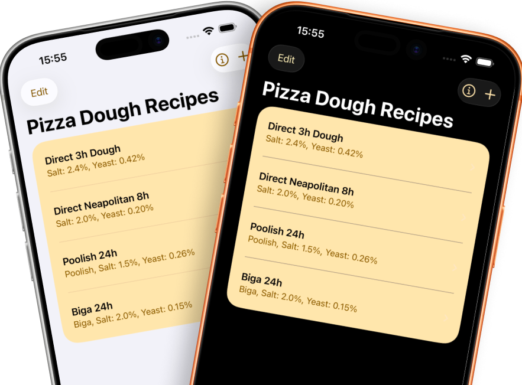
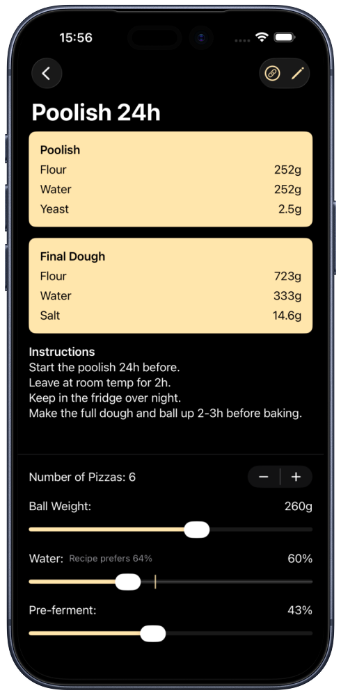
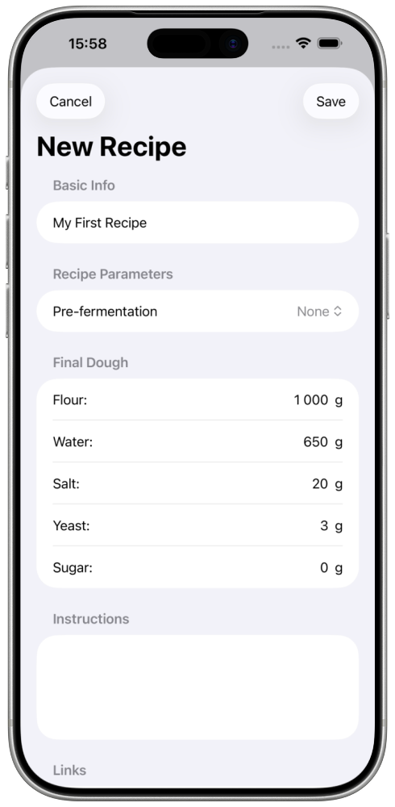
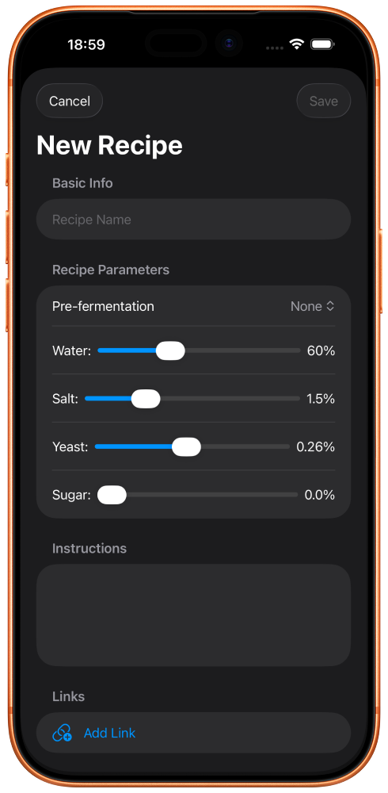

Pizza Dough Calculator
Calculate exact ingredient amounts for perfect pizza dough every time. Whether you're a beginner home baker experimenting with new recipes or an experienced enthusiast pizza maker, Pizza Calc helps you create consistent, delicious dough with support for popular pre-fermentation techniques.

Pizza Calc calculates exact ingredient amounts based on your specifications. Simply set the number of pizzas you want to make, the desired ball weight, and your preferred water percentage. The app handles all the complex math, ensuring your dough turns out perfectly every time.
Take your pizza dough to the next level with support for professional pre-fermentation methods. Choose from Poolish (100% hydration), Biga (50% hydration), or a combined approach that uses both techniques. These methods develop deeper flavors and improve texture through extended fermentation.
Create recipes using either percentage-based or weight-based input. If you have a recipe with percentages, enter them directly. If you have specific weights from a recipe, the app will calculate the percentages for you. Both methods give you full control over your dough formulas.
Save and organize multiple recipes with notes and links. Add instructions, fermentation times, and links to videos or websites that inspired your recipe. Reorder recipes by dragging and dropping, and easily edit or delete recipes as your techniques evolve.
Fine-tune your calculations with adjustable settings for number of pizzas (1-20), ball weight (200-300g), water percentage (50-80%), and pre-ferment percentage (0-100%). The app shows recommended values from your recipe while allowing you to experiment with different parameters.



Pizza Calc offers two ways to create recipes:
Both methods allow you to add notes and links to your recipe. Notes can include fermentation times, mixing instructions, or any other details you want to remember. Links can point to YouTube videos, recipe websites, or any other resources that inspired your recipe.
Pre-fermentation is a technique where a portion of the flour, water, and yeast is mixed ahead of time, typically 12-24 hours before making the final dough. This develops more complex flavors and can improve the texture of your pizza.
A poolish is a liquid pre-ferment with equal parts flour and water (100% hydration). It's typically made with a small amount of yeast and fermented for 12-18 hours at room temperature. Poolish creates a more open crumb structure and adds subtle sour notes to your dough.
A biga is a stiff pre-ferment with lower hydration (typically 50% hydration, meaning half as much water as flour). It's similar to a poolish but produces different flavors due to the lower water content. Biga tends to create a more structured, chewy texture with less sourness than poolish.
The app can also calculate a combined approach that uses both poolish and biga. The app automatically determines the optimal ratio between poolish and biga based on your target water ratio, giving you the benefits of both methods in a single recipe.
The app calculates ingredient amounts based on several adjustable settings:
The app performs all calculations in real-time as you adjust these settings, showing you the exact amounts needed for each ingredient in both the pre-ferment (if used) and final dough stages.
All your recipes are automatically saved and synced across your devices using iCloud. You can:
Each recipe can include multiple links to external resources. This is perfect for:
When editing a recipe, you can add new links, reorder them, or delete them. Links are displayed in a sheet that opens when you tap the link icon on a recipe detail view.
The water percentage (also called hydration) is one of the most important factors in pizza dough. It's calculated as the percentage of water relative to flour weight. For example, 60% hydration means 600g of water for every 1000g of flour.
Water percentage greatly affects dough texture and handling:
The app shows your recipe's preferred water percentage, but you can adjust it to experiment with different hydration levels. The calculations update automatically as you change the water percentage slider.
If you have questions, encounter issues, or have suggestions for improving Pizza Calc, please don't hesitate to reach out:
I'm always happy to help and appreciate your feedback!
For information about privacy and data collection, please see our Privacy Policy.